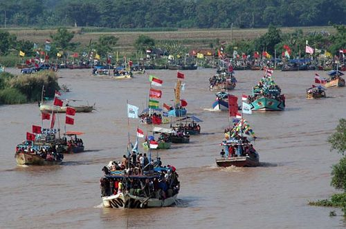

Nyadran
Nyadran merupakan upacara adat bagi bagi para nelayan sebagai ungkapan rasa syukur kepada Tuhan Yang Maha Esa biasanya dilakukan setiap
bulan ruwah (Kalender Jawa). Nyadran di Sidoarjo mempunyai keunikan tersendiri. Kegiatan Nyadran dilakukan oleh masyarakat yang mata
pencahariaannya sebagai nelayan kupang. Bentuk kegiatan Nyadran berupa pesta peragaan cara mengambil kupang di tengah laut Selat Madura.
Mereka berangkat dengan diiringi seluruh keluarga nelayan sejak tengah malam. Saat pesta upacara Nyadran, nelayan juga menyiapkan sesaji. Sesaji
yang disiapkan berupa ayam panggang, nasi, pisang, serta kue yang dimasukkan dalam tomblok. Kegiatan ini memulai persiapan dari sore hari,
dilanjutkan kenduri dirumah nelayan masing-masing usai shalat magrib, dan setelah malam tiba iring-iringan perahu diberangkatkan menuju pesta
Nyadran di Selat Madura dibarengi para remaja berjoget diatas perahu
Lokasi : Desa Balongdowo, Kecamatan Candi